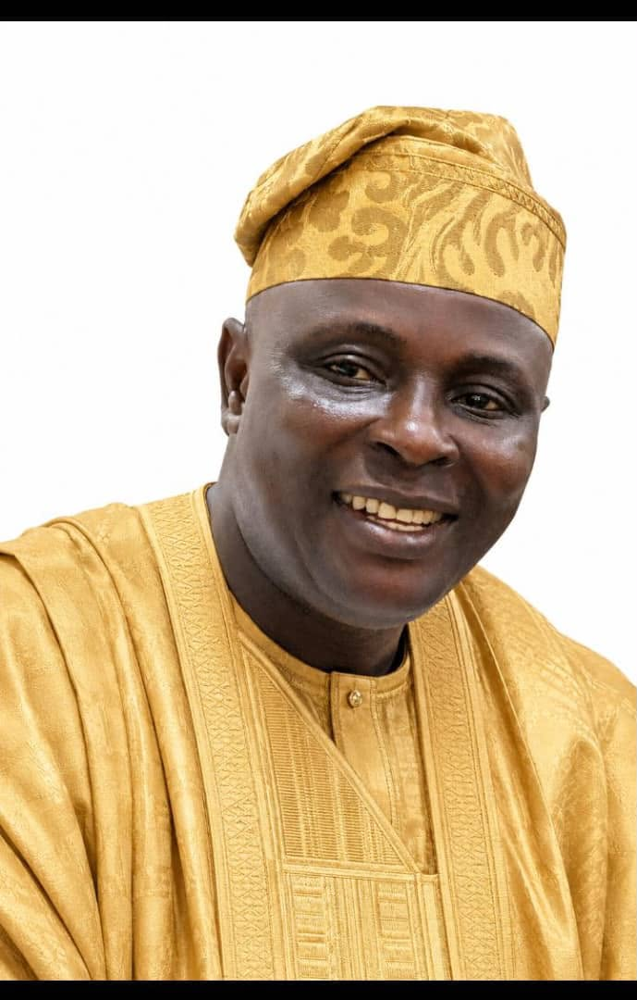

Hon. Nurudeen Abayomi Sadeeq is a dedicated community leader and Lagos State House of Assembly candidate under the National Democratic Congress (NDC) for Ojo Constituency II.
He is committed to quality education, accessible healthcare, better roads and drainage, youth and women empowerment, security, transparency, and accountable leadership.
His vision is to build a better Ojo Constituency II where every resident has equal opportunities to succeed and where government truly serves the people.
Join the Movement
Lagos State House of Assembly Candidate
A New Voice, A Better Ojo
Service • Development • Accountability
Read Our Manifesto Join the MovementImprove schools, provide learning materials and create opportunities for every child.
Support quality primary healthcare centres and improve access to medical services.
Promote better roads, drainage systems and safer communities across Ojo Constituency II.
Create jobs, skills acquisition programmes and support entrepreneurship for young people.
Regular meetings are being held across Ojo Constituency II to engage party members and supporters.
HON. Nurudeen Abayomi Sadeeq continues to meet with community leaders, youths and women groups.
Join our growing team of volunteers as we work together for a better Ojo Constituency II.
Together we can build a better Ojo Constituency II. Volunteer, support and vote for HON. Nurudeen Abayomi Sadeeq.
Hon. Nurudeen Abayomi Sadeeq is committed to transparent leadership, quality education, better healthcare, youth empowerment, good roads, and sustainable development for every community in Ojo Constituency II.
Read Our Manifesto Join the MovementA leader who listens to the people and stays connected with every community.
Committed to improved roads, drainage systems, schools, and healthcare centres.
Creating opportunities through skills acquisition, employment, and business support.
A leader who listens to the people and stays connected with every community.
Committed to improved roads, drainage, schools, and healthcare centres.
Creating opportunities through skills acquisition, employment, and business support.
✅ Better Roads and Drainage
✅ Quality Education
✅ Accessible Healthcare
✅ Youth and Women Empowerment
✅ Security and Community Development
"Together We Will Build A Better Ojo."